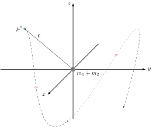

Properties¶
Plan of Action
The general 2-body problem may be simplified greatly by utilizing several special properties admitted by the system. These properties will enable a full solution of the general problem to be determined analytically.
Recall
The equations of motion of the general 2-body problem determined by the Newtonian, Lagrangian, and Hamiltonian formalisms are
Amazingly, this system (1) has a closed-form solution. Obtaining this solution, however, is made significantly easier once several properties are known.
Relative Form¶
The Newtonian, Lagrangian, and Hamiltonian formalisms all provide the same system of equations for the motion of two particles under mutual Newtonian gravitational attraction with respect to the origin of the inertial coordinate system given by (1). To reduce the complexity of this system (as we will see), we can define the relative distance between each body as
The equations of motion may be calculated directly since
where \(r = |\mathbf{r}|\).
Note
The same result is achieved had we used Newton’s 3rd law since \(m_1 \ddot{\mathbf{r}}_1 = -m_2\ddot{\mathbf{r}}_2\), i.e.
Important
Doing this is beneficial because it exploits a symmetry in the full system of equations, essentially halving the number of equations to be solved in order to obtain any information about either body.
Conserved Quantities¶
Energy¶
Recall
For \(q,p \in \mathbb{R}^n\), a canonical Hamiltonian system satisfies \(\dot{q} = \mathcal{H}_p\) and \(\dot{p} = -\mathcal{H}_q\) for which, along a trajectory,
The Hamiltonian is explicitly independent of time \(t\). That is,
along trajectories of the system.
Important
The Hamiltonian itself is conserved under the dynamics of the 2-body problem.
Linear Momentum¶
Recall
For any \(x_1, x_2 \in \mathbb{R}^3\), the center of mass for a system of two particles with respect to an inertial coordinate system is
where \(m_1\) and \(m_2\) are the masses of each body located (instantaneously) at \(x_1\) and \(x_2\), respectively.
The two bodies are isolated – that is, the center of mass satisfies
since there is no external forcing to the system. As such, the center of mass moves in a straight line (or not at all) in accordance with Newton’s 1st law. Further, we have explicitly that
Important
(2) provides direct information of both bodies (relative to each other) through (3) and enables the inertial positions of both bodies to be calculated from (4) rather than directly solved from (1).
This solidifies the idea that only half of the amount of equations have to be solved with (3), but now all information about both bodies is known.
Angular Momentum¶
Recall
For any \(x \in \mathbb{R}^3\), the cross-product of \(x\) with itself vanishes (i.e., \(x \times x \equiv 0\)).
For any \(x,y \in \mathbb{R}^3\), the cross-product is anticommutative (i.e. \(x \times y + y \times x \equiv 0\)).
Rewriting the Kepler problem in a convenient form,
lets us immediately show
Consequently, we conclude that the (specific) angular momentum \(\mathbf{h}\) is conserved under the dynamics of the 2-body problem.
Important
The motion of the two bodies must be planar.
The Laplace-Runge-Lenz Vector¶
Recall
For any \(x,y,z \in \mathbb{R}^3\), the vector triple product satisfies
Knowing that the angular momentum \(h\) is conserved, consider the following.
Finally, exploiting linearity of the differential operator provides the conserved quantity, \(\mathbf{A}\), referred to as the Laplace-Runge-Lenz vector.
Important
The Laplace-Runge-Lenz vector provides a constant direction in the plane of motion of the two bodies.
The Reduced Mass¶
The system (3) is writable as
which is in the form of Newton’s 2nd law for a single particle of mass \(\mu^*\) being tracked in an inertial coordinate system with position \(\mathbf{r}\) under the influence of a potential \(V\). More clearly, we can write
The 2-body system (3) can therefore be treated like it describes a single particle[1]. (The quantity \(\mu^*\) that makes this purely mathematical simplification possible is called the reduced mass.)
{kind=link}
Fact
For any \(m_1, m_2 > 0\),
Proof: Suppose the opposite. Then \((m_1 + m_2)^2 = m_1^2 + 2m_1 m_2 + m_2^2 < m_1 m_2\), but this means \(m_1^2 + m_2^2 < -m_1 m_2\) — a contradiction. \(\blacksquare\)
Important
The resulting trajectory of a single body of mass \(\mu^*\) under the influence of the potential from a static body of mass \(m_1 + m_2\) is the same trajectory experienced by the relative motion of two bodies under mutual Newtonian gravitational attraction. This trajectory for both cases is \(\mathbf{r}\).
Standard Form¶
The standard form of the Kepler problem is achieved after defining the gravitational parameter
such that the equations of motion for the relative motion of one body about the other are
Important
In astrophysical applications, \(\mu\) can be viewed as a quantity of two (generally) unknown parameters \(m_1\) and \(m_2\) whose values are to be determined.
Important
In some dynamical astronomy and nearly all engineering applications, \(\mu\) can be easily regarded as being identified exactly with
where \(M = m_1\) is the mass of a central body much more massive than the other, i.e. \(m_1 \ggg m_2\). (This is the case where \(m_2\) represents spacecraft, comets, etc.)
The effective statement of taking \(\mu\) this way is that the central body of mass \(m_1\) moves in a straight line (or not at all) relative to the inertial frame (all in accordance with Newton’s 1st law), but the motion of the smaller body of mass \(m_2\) is still affected by the presence of the central body. (This scenario is that of the reduced mass, where \(\mu^* \approx m_2\) is the mass of the particle in motion and \(m_1 + m_2 \approx M\) is the central body’s mass.)
Warning
Do not confuse the 2-body gravitational parameter \(\mu\) with the 3-body mass parameter \(\mu\).
These quantities, though sharing the same symbol, are different.